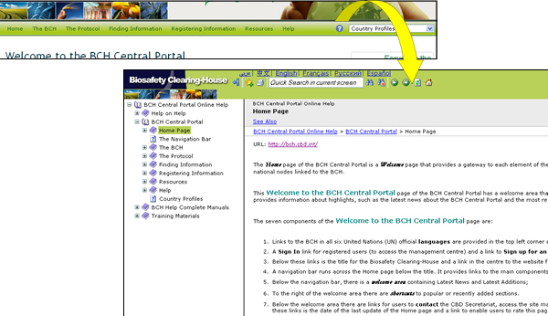

Clicking on the Help menu in the navigation bar takes the user to the Online Help System of the BCH Central Portal. This help system provides thorough information on the usage of the BCH and has been designed as a context-sensitive help system. This means that the system is able to provide help content related to the BCH pages that the user is currently using. To access context-sensitive help whenever using the BCH, simply click on the blue question mark icon to the top right of each page.

The help system has been developed in all six UN official languages, and the user can switch language as needed using the language bar of the Help System. This help system can also be used to read complete training manuals online.
-
Help: this is a link to help contents main page in the BCH Online Help System.
-
Help on Help: this is a link to a help page with information about how to use the BCH Online Help System and which explains its main features.
-
BCH Central Portal: this link takes the user to a section in the Help System with comprehensive content about the BCH Central Portal.
-
Complete BCH Help Manuals: this link takes the user to a section in the Help System in which all training modules can be found for online reading, each of them organized into several web pages.
-
Training Materials: this link takes to user to a section in the Help System which provides access to all training materials available for download.
-